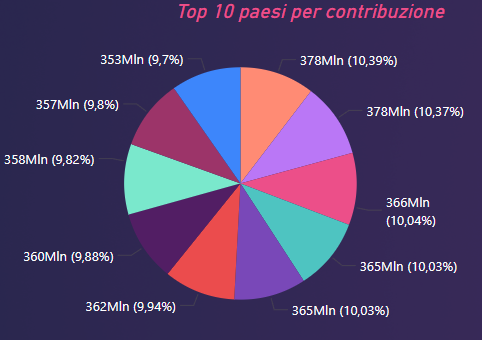

Data related projects
In questa sezione verranno elencati i progetti inerenti al mondo data e machine learning.
Principali tecnologie: Python (Pandas, Numpy, Matplotlib, Seaborn e Scikit-learn).

Heart Disease Classification (Progetto Universitario)
Semplice modello di classificazione binaria per prevedere l'insorgenza di un attacco cardiaco.

European corporates sales analysis
Analisi delle vendite di una azienda fittizia con clienti europei. Il dataset è stato generato randomicamente.
Mushroom Classification
Semplice modello di classificazione binaria per prevedere se un fungo e' commestibile o meno.